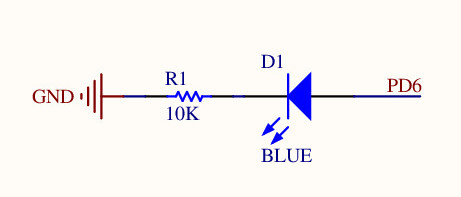
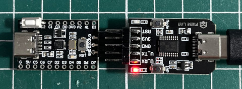
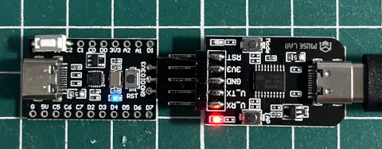

Steward
分享是一種喜悅、更是一種幸福
微處理器 - WCH CH32V003 (nanoCH32V003) - Assembly - LED
參考資訊：
https://github.com/ch32-rs/wlink
file:///home/steward/Downloads/CH32V003RM.PDF
https://github.com/AdiHamulic/CH32V003-Bare-Metal
https://github.com/ch32-rs/wlink/blob/main/docs/references.md
https://github.com/xpack-dev-tools/riscv-none-elf-gcc-xpack/releases/tag/v14.2.0-3
LED是連接到D6

IOPDEN

暫存器位址

I/O Mode

Data

main.s
.global _start
.equ RCC_APB2PCENR, 0x40021018
.equ R32_GPIOD_CFGLR, 0x40011400
.equ R32_GPIOD_OUTDR, 0x4001140C
.align 2
.option norvc
.text
j _start
.org 0x0300
_start:
li t0, (1 << 5)
li a0, RCC_APB2PCENR
sw t0, 0(a0)
li t0, (1 << 24)
li a0, R32_GPIOD_CFGLR
sw t0, 0(a0)
li t0, 0x0000
li t1, 0xffff
0:
xor t0, t0, t1
li a0, R32_GPIOD_OUTDR
sw t0, 0(a0)
lui t2, 100
1:
nop
addi t2, t2, -1
bgtz t2, 1b
j 0b
.end
main.ld
MEMORY
{
RAM : ORIGIN = 0, LENGTH = 2K
}
SECTIONS
{
.text : { *(.text*) } > RAM
.data : { *(.data*) } > RAM
}
Makefile
all: riscv-none-elf-as -march=rv32ec -mabi=ilp32e -o main.o main.s riscv-none-elf-ld -T main.ld -o main.elf main.o riscv-none-elf-objcopy -O binary main.elf main.bin run: wlink flash --address 0x08000000 main.bin clean: rm -rf main.bin main.o main.elf
將VCC、SWDIO、GND連接到WCH-Link燒錄器，接著編譯、燒錄
$ make
riscv-none-elf-as -march=rv32ec -mabi=ilp32e -o main.o main.s
riscv-none-elf-ld -T main.ld -o main.elf main.o
riscv-none-elf-objcopy -O binary main.elf main.bin
$ make run
wlink erase --method power-off --chip ch32v003
09:55:36 [INFO] Connected to WCH-Link v2.17(v37) (WCH-LinkE-CH32V305)
09:55:36 [INFO] Erase chip by PowerOff
wlink flash --address 0x08000000 main.bin
09:55:36 [INFO] Connected to WCH-Link v2.17(v37) (WCH-LinkE-CH32V305)
09:55:36 [INFO] Attached chip: CH32V003 [CH32V003F4U6] (ChipID: 0x00310500)
09:55:36 [INFO] Chip ESIG: FlashSize(16KB) UID(cd-ab-a5-7e-0c-bc-7e-e6)
09:55:36 [INFO] Flash protected: false
09:55:36 [INFO] Read main.bin as Binary format
09:55:36 [INFO] Flashing 846 bytes to 0x08000000
09:55:36 [INFO] Read protected: false
09:55:37 [INFO] Flash done
09:55:37 [INFO] Now reset...
完成

